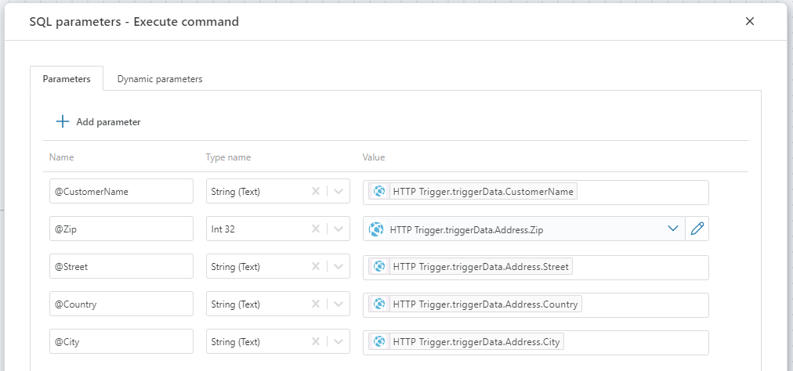
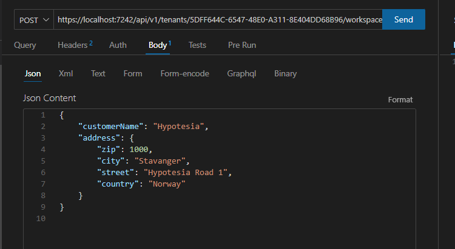

HTTP trigger
When a Flow is executed from an HTTP request, the HTTP trigger defines how to convert the HTTP request body to a business object.
You can also get the HTTP endpoint of the Flow from the HTTP trigger. The HTTP endpoint is the URL used to execute the Flow from a 3rd party application.
Note
You must define at least one API Key with Execute permissions in order to execute a Flow from a 3rd party application. A Flow will have no public HTTP endpoint unless at least one API key is defined in the tenant.
Example
This example demonstrates how to run a Flow from the Thunder Client Visual Studio Code plugin.
The Flow will add a new customer to a database. The name and address of the customer is passed to the Flow via the HTTP request body.
The customer object looks like this:
{
"customerName": "Hypotesia",
"address": {
"zip": 1000,
"city": "Stavanger",
"street": "Hypotesia Road 1",
"country": "Norway"
}
}
1) Create a new Flow
Create a new Flow from the Portal or from the File menu in the Designer.
2) Add an HTTP trigger
Add an HTTP trigger to the Flow. This is where you define the shape of the customer object passed in from the caller. By defining the customer object, you can reference it and its properties later in the Flow.
1) Select the HTTP trigger and click the Data Definition in the Properties panel to define the customer object.
2) Choose CSharp as format, and define the following types.
public class Customer
{
public string CustomerName {get;set;}
public Address Address {get;set;}
}
public record Address(int Zip, string City, string Street, string Country);
Note
If you need to use multiple types to define the data type of a request body, the main type must be defined at the top.
3) Add the new customer to the database
1) Add a SQL Server Execute command action and connect the output and input ports of the HTTP trigger and Execute command action.
2) Select the Execute command action and define the following SQL parameters in the Properties panel.

3) Define the following SQL expression in the Properties panel.
INSERT INTO Customers (CustomerName, Zip, City, Street, Country) VALUES(@CustomerName, @Zip, @City, @Street, @Country)
4) Run the Flow from Thunder Client in VS Code.
1) Select the HTTP trigger and click Show endpoints in the Properties panel.
2) Copy the Short running URL to the clipboard.
3) Switch to the Thunder Client in VS code and create a new request.
1. Use POST as HTTP verb
2. Paste the URL from step 2)
3. Copy the Customer JSON object above and paste it into the JSON Content field
4. Press Send to execute the Flow. If everything is defined correctly, you should now have a new customer row in the database. If you do not see the expected result, you can inspect the Execution logs to investigate any issues.
